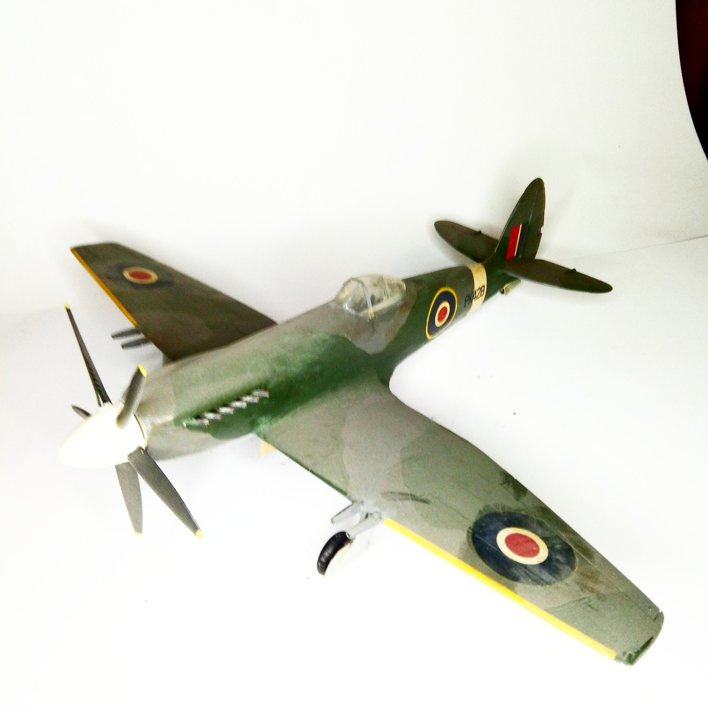

Aerei · scale model archive
Supermarine Spiteful
Supermarine Spiteful — Kit: conversion from Spitfire MkXIV Matchbox kit, Scale: 1/32. I had the crazy idea of an 1/32 Spiteful when no kit of the…

Photo gallery
English description
I had the crazy idea of an 1/32 Spiteful when no kit of the Spiteful ever existed and I liked this type very much
#1/32 #conversion
Descrizione italiana
I had il crazy idea di una 1/32 Spiteful when no kit del Spiteful ever existed e mi piaced questo type very much.